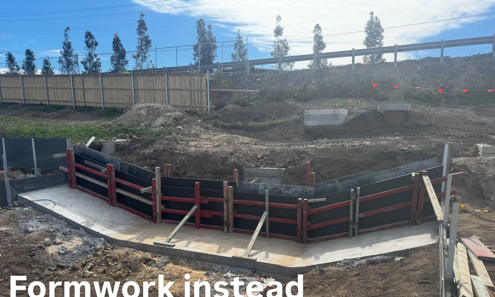
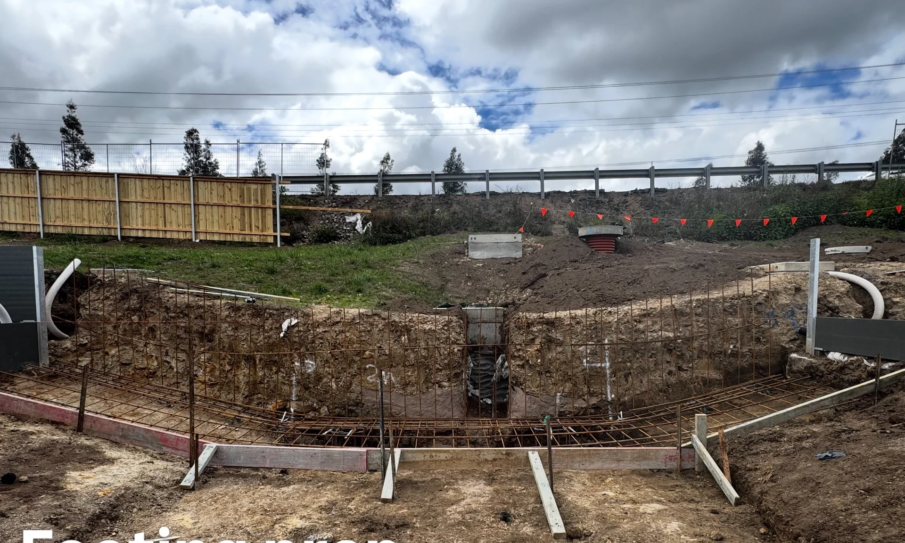
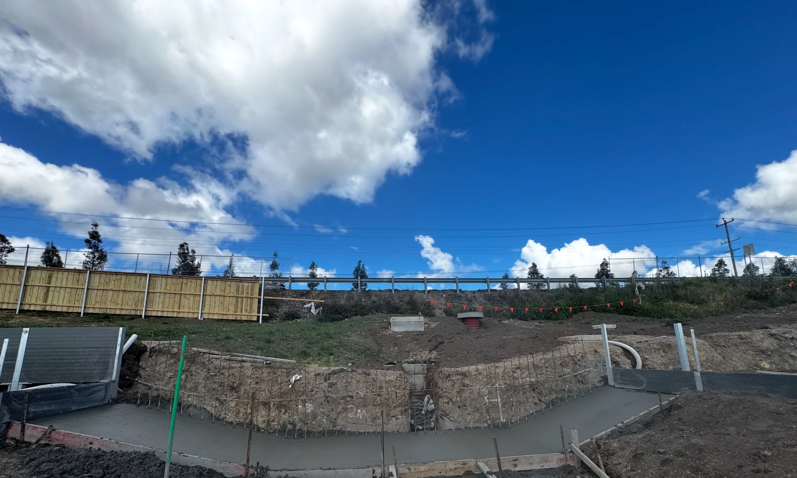

Concrete driveways
The broad strokes of your home's first impression. A considered concrete surface engineered for the comings and goings of daily life.
 NEWY CRETE.
Talk to us 0436 486 214 ↗
NEWY CRETE.
Talk to us 0436 486 214 ↗
DRIVEWAYS & PATHWAYS
Concrete with presence.
Exposed finishes that turn the everyday
into something considered.
01 WHY NEWY CRETE
Newy Concrete Solutions Pty Ltd brings craft to the surfaces that connect you to home. Thoughtful concrete driveways and pathways, with the texture of an exposed finish.
A better way to come home ↗02 WHAT WE DO
The broad strokes of your home's first impression. A considered concrete surface engineered for the comings and goings of daily life.
Connect the spaces you live in. Practical paths that bring a sense of rhythm, direction and cohesion to the outdoors.
Natural aggregate brought to the surface. Depth, texture and a distinctive finish that works with your home's character.

03 OUR APPROACH
Good concrete does more than fill a space. It makes an entrance, sets a tone, connects a home.
We start with your space and what you want from it. Tell us about the surface you have in mind.
Plain speaks quietly. Exposed aggregate brings texture. We help you choose a finish that belongs at your place.
A driveway could just be a driveway. We think it's an opportunity to do something better.
04 THE FINISH
Exposed concrete lets natural material do the talking. A finish with an honest, tactile quality — considered, not covered up.
Discuss your finish ↗
Some surfaces disappear into the everyday.
Exposed concrete gives you a reason to look down.
05 FROM FORMWORK TO FINISH
Every slab starts with disciplined excavation, boxed formwork and steel reinforcement before a drop of concrete leaves the chute. Scroll, drag, or step through a recent Newcastle driveway from start to finish.

STAGE 01 / FOOTING PREPExcavating the curved footing trench, setting string lines and fall, and placing steel chairs before the foundation pour.

STAGE 02 / FOOTING POUREDA solid, level concrete footing poured in the trench with vertical starter bars tied in to anchor the structural wall and steps.
Precision plywood shuttering and heavy red steel bracing locked over the cured footing to form crisp vertical walls and steps.
STAGE 04 / FINISHED CONCRETE
Clean lines, integrated concrete steps and drainage gravel backfill — structural residential concrete built to last.
 STAGE 05 / LIVE SLAB POUR
STAGE 05 / LIVE SLAB POUR
Direct from the pour — guiding the boom-pump placement, raking and screeding wet concrete across the slab in Newcastle.
06 LET'S TALK CONCRETE
Tell us a little about your driveway or pathway. We're happy to hear what you have in mind.
Call Newy Crete0436 486 214 ↗A real conversation about your project.
No automated quoting. No invented prices.
PLAN YOUR POUR
Prefer to talk it through? Call 0436 486 214.